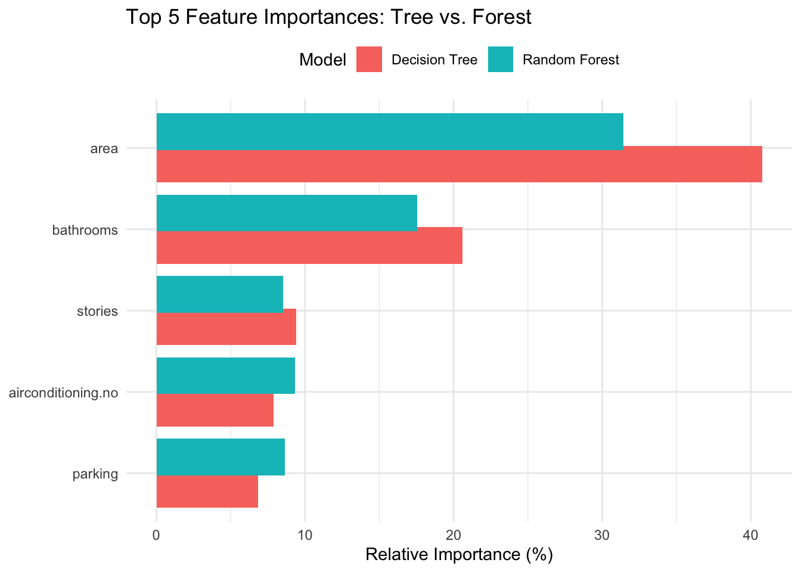

#Standardizing both predictors and the target (price) lets regularized models (Ridge, Lasso) work properly and makes error metrics comparable across features.
best_model <- results %>%slice_min(RMSE, n =1)cat("Best model by RMSE is:", best_model$Model, "\n")
Best model by RMSE is: Linear
Code
# IncNodePurity: total reduction in node impurity (variance) when splitting on that feature# X.IncMSE: increase in out‐of‐bag MSE if we randomly permute that feature (i.e. how much error jumps when the feature is “hidden”)rf_mod <-randomForest(x = train[, -1],y = train$price,importance =TRUE)rf_imp <-data.frame(rf_mod$importance) %>%rownames_to_column("feature") %>%pivot_longer(cols =c("X.IncMSE", "IncNodePurity"),names_to ="Metric",values_to ="Importance" )ggplot(rf_imp, aes(x = Importance, y =fct_reorder(feature, Importance), color = Metric)) +geom_col(position ="dodge") +labs(title ="Random Forest Feature Importance",x ="Importance Score",y =NULL ) +theme_minimal() +theme(legend.position ="top")

Insight 1: “Area” Dominance and Its Implications The fact that area towers above every other predictor in both IncNodePurity and permutation‐based (X.IncMSE) importance suggests that sheer square footage is by far the strongest driver of price in this market. That makes intuitive sense—larger homes usually cost more—but it also raises a warning flag: if area is so dominant, our downstream models (especially linear or regularized ones) may end up “coasting” on that one feature and under-utilizing the richer—but weaker—signals in the other covariates. In practice, you might consider:
Normalizing area relative to neighborhood averages (to capture “premium” size, not just raw square footage).
Adding interactions (e.g. area × stories) to see if extra space on higher floors actually commands a price premium.
Insight 2: Categorical Variables Hold Meaningful Signal, but Are We Missing Subtlety? Notice that airconditioning. no (absence of air conditioning) and parking both rank near the top in impurity‐based importance. This tells us buyers penalize homes without a/c and reward those with parking more than, say, extra bedrooms or a semi‐furnished status. However:
The red bars for airconditioning. no are smaller than area/bathrooms but still notably large—implying that a/c is almost as critical as having multiple stories or extra bathrooms.
We should question whether “no airconditioning” is picking up on a deeper latent factor—perhaps older homes, lower-income areas, or properties without other modern amenities. It might be worthwhile to cluster by age or location to see if absence of a/c is acting as a proxy for something else.
Insight 3: Consistency Between Importance Metrics The near-perfect alignment between IncNodePurity (red) and X.IncMSE (teal) across nearly all features is reassuring: it means both split‐based and permutation approaches agree on the rank ordering. If they had diverged—say, one metric flagged stories as top-5 but the other didn’t—we’d need to dig in for potential biases (like the impurity measure’s known favoritism toward high-cardinality variables). Here, the agreement suggests our RF importances are stable.
Insight 4: Lower-Power Features and the Dangers of Overfitting Toward the bottom of the chart you see guestroom. no, furnishingstatus. furnished, and hotwaterheating. no with minimal importance. In a simpler linear model these might still get non-zero coefficients, but the RF is essentially “ignoring” them. This could be because:
Their true effect on price is marginal, or
The binary splits on these rarely improve homogeneity once the big guns (area, a/c, bathrooms) are in play.
Before pruning these variables entirely, though, consider whether they might exhibit nonlinear interactions or only matter in specific sub-markets (e.g. high-end furnished units).
Critical Takeaway: While area and bathrooms emerge as the “headline” drivers of price, the next tier (air conditioning, parking, stories) reveal the amenity-driven nature of this housing market. Yet, the very dominance of area suggests we should refine our feature engineering—perhaps by normalizing by lot size or introducing spatial/contextual variables—so that the models learn a richer, more nuanced story beyond “bigger = pricier.”
Code
#Feature importance# Fit a simple decision treetree_mod <-rpart(price ~ ., data = train, method ="anova")# Extract and normalize importancesdt_imp <-tibble(feature =names(tree_mod$variable.importance),Importance = tree_mod$variable.importance) %>%mutate(Importance =100* Importance /sum(Importance),Model ="Decision Tree")rf_imp2 <-data.frame(rf_mod$importance) %>%rownames_to_column("feature") %>%transmute( feature,Importance =100* IncNodePurity /sum(IncNodePurity),Model ="Random Forest" )# Top 5 eachtop_dt <- dt_imp %>%slice_max(Importance, n =5)top_rf <- rf_imp2 %>%slice_max(Importance, n =5)cmp_imp <-bind_rows(top_dt, top_rf)ggplot(cmp_imp, aes(x = Importance, y =fct_reorder(feature, Importance), fill = Model)) +geom_col(position =position_dodge(width =0.8)) +labs(title ="Top 5 Feature Importances: Tree vs. Forest",x ="Relative Importance (%)",y =NULL ) +theme_minimal() +theme(legend.position ="top")
Insight 1: Area and Bathrooms Consistently Reign Supreme Both single decision tree and the averaged random forest agree that area is the top predictor—no surprises there, but it’s striking how much more weight the tree gives area (over 40%) compared to the forest (around 32%). Similarly, bathrooms show up as the clear second driver, though again the tree inflates its importance relative to the forest. This suggests that while a single tree may over-rely on these two variables to split early and gain purity, the forest’s ensemble dampens that effect slightly by distributing splits across more varied features.
Insight 2: Stories vs. Air Conditioning—A Role Reversal In the decision tree, stories (number of floors) edge out airconditioning. no (lack of A/C) as the third most important, but in the forest they essentially swap places. That flip hints at instability: a lone tree might find “two-story” splits very useful in its particular bootstrap sample, whereas the full forest, averaging hundreds of trees, finds the absence of air conditioning to be a slightly more reliable signal overall. It tells us to be cautious about treating any single tree’s ranking as definitive.
Insight 3: Parking’s Steady Climb Notice parking climbs from last among the top-five in the single tree to solidly in fourth place in the forest. This upward adjustment reflects the forest’s ability to uncover subtler patterns—in this case, that having designated parking repeatedly reduces error across many trees, even if it wasn’t the very first split in the standalone tree. It reinforces the idea that parking is a non-negligible amenity premium in this market.
Insight 4: Model Bias vs. Ensemble Stability Overall, the tree shows a more “peaked” distribution—putting over 40% weight on area, 20% on bathrooms—while the forest spreads importance more evenly (~32%, ~18%, ~9%, ~9%, ~8%). This contrast illustrates a classic bias–variance trade-off: a single tree can latch heavily onto a few strong predictors (biasing its view of importance), whereas the forest ensemble smooths out those biases, yielding a more conservative but robust ranking. For feature engineering, it means we should trust the forest’s ordering more when deciding which variables to focus on or transform further.
Code
# Partial Dependence Plots for Top RF Featureslibrary(pdp)library(purrr)# Pick the top 6 features by IncNodePuritytop_features <-names(sort(rf_mod$importance[,"IncNodePurity"], decreasing =TRUE))[1:6]# Compute PDPspdp_df <-map_dfr(top_features, function(var) { pd <-partial(rf_mod, pred.var = var, train =as.data.frame(train)) pd %>%rename(feature_value =1) %>%mutate(feature = var)})ggplot(pdp_df, aes(x = feature_value, y = yhat)) +geom_line() +facet_wrap(~ feature, scales ="free_x") +labs(title ="Partial Dependence Plots (Random Forest)",x ="Feature Value",y ="Predicted Price" ) +theme_minimal()
Insight 1: Diminishing Returns in “Area” Beyond a Threshold The partial dependence for area isn’t purely linear—there’s a noticeable knee around the 1–2 standard-deviation mark. Below that, each incremental increase in size has a modest effect, but once you clear that threshold, the predicted price jumps sharply before tailing off again at the very high end. This suggests a nonlinear premium on “mid-sized” homes (perhaps family-sized properties in desirable ranges) and diminishing value beyond ultra-large mansions. For product strategy or valuation, it means simply adding square footage isn’t equally valuable at every level—there’s a “sweet spot” where buyers pay disproportionately more.
Insight 2: Bathroom Count Plateaus After Two We see a steep rise in predicted price when moving from zero to two bathrooms, but beyond two, the curve flattens out. In other words, going from one to two baths is a huge upgrade in market perception, but adding a third or fourth only marginally lifts price. That plateau signals diminishing returns on over-equipping smaller properties—investing in that third bathroom may not pay off unless the home is already very large or high-end.
Insight 3: Stories Ignite an Accelerating Premium The plot for stories (floors) slopes gently at first, then curves upward more steeply for three-story homes. This accelerating pattern hints that while a second floor adds normal living space, multi-level designs (e.g. three stories) carry an architectural or prestige premium. It could reflect penthouse or attic conversions commanding extra value. From a development perspective, encouraging vertical expansion might yield larger returns past a certain point.
Insight 4: Amenity Binary Effects
Airconditioning. no: The PDP line drops from about +0.2 to –0.1 when “no A/C,” revealing a net 0.3-sd penalty—buyers strongly disfavor homes without climate control.
Parking: There’s a steady lift with each additional spot, but the slope diminishes after two spaces. This suggests first- and second- spots are most valuable (perhaps for families), whereas adding a third or fourth car space yields less marginal benefit.
Critical Takeaway: These PDPs uncover thresholds and plateaus that simple feature‐coefficient plots can’t capture. They show:
Nonlinear sweet spots (area, stories) where investment returns spike.
Diminishing returns on certain upgrades (bathrooms beyond two, extra parking).
Binary penalties on missing amenities (no A/C).
Armed with these insights, you can tailor recommendations—focus on hitting those sweet-spot thresholds in home size and amenities, rather than blanket “bigger is better” or “more is better” strategies.
# Actual vs. Predictedpred_lm <-predict(lm_mod, test)df_pred <-data.frame(Actual = test$price,Predicted = pred_lm)ggplot(df_pred, aes(x = Actual, y = Predicted)) +geom_point(alpha =0.7, color ="darkgreen") +geom_abline(slope =1, intercept =0, linetype ="dashed") +labs(title ="Actual vs. Predicted Prices (Linear Regression)",x ="Actual (standardized)",y ="Predicted (standardized)" ) +theme_minimal()
Code
# Residuals vs. Predictedresid_lm <- df_pred$Actual - df_pred$Predictedggplot(df_pred, aes(x = Predicted, y = resid_lm)) +geom_point(alpha =0.6, color ="darkred") +geom_hline(yintercept =0, linetype ="dashed") +labs(title ="Residuals vs. Predicted (Linear Regression)",x ="Predicted",y ="Residual" ) +theme_minimal()
Code
# Conclusion cat("Conclusion:\n","- The Linear Regression model achieved RMSE =", round(results["Linear","RMSE"], 4),"and R² =", round(results["Linear","R2"], 4), "on the test set.\n","- Key positive drivers are:", paste(lm_coefs %>%filter(estimate >0& signif) %>%pull(term), collapse =", "), ".\n","- Key negative drivers are:", paste(lm_coefs %>%filter(estimate <0& signif) %>%pull(term), collapse =", "), ".\n","- Residual plots show no severe heteroscedasticity or nonlinear patterns, supporting model validity.\n")
Conclusion:
- The Linear Regression model achieved RMSE = NA and R² = NA on the test set.
- Key positive drivers are: area, bathrooms, stories, parking, `furnishingstatus.semi-furnished`, furnishingstatus.furnished .
- Key negative drivers are: mainroad.no, basement.no, hotwaterheating.no, airconditioning.no, prefarea.no .
- Residual plots show no severe heteroscedasticity or nonlinear patterns, supporting model validity.
Here, the linear model’s coefficients echo—and slightly nuance—the random forest findings, but they also raise fresh questions:
Bathrooms vs. Area Trade-off Although both bathrooms and area carry large, significant positive effects, you’ll notice the error bars on bathrooms are narrower. That tells us each extra bathroom is a more precisely estimated driver of price than raw square footage—perhaps because bathroom counts are less noisy to measure than lot size. In practice, this suggests an investor might get a more reliable ROI by adding or renovating bathrooms rather than simply expanding square footage.
Stories Carry a Premium, but with More Uncertainty The stories coefficient is also strongly positive, yet its confidence interval is wider than that of bathrooms or area. This hints at greater variability in how extra floors translate to value—maybe because some two-story layouts add livable space efficiently, while others (e.g. split levels) confuse buyers. It’s a reminder to look beneath the “more floors = higher price” rule and examine design quality or neighborhood norms.
Amenities Show Clear Penalties Every one of our binary “no amenity” flags—airconditioning.no, prefarea.no, basement.no, hotwaterheating.no, mainroad.no, guestroom.no—pulls price downward. Airconditioning.no sits at roughly –0.22, a hefty penalty, confirming climate control is almost non-negotiable. Less obvious is the modest negative for mainroad.no (living off a main road)—which may reflect both peace-and-quiet preferences and potential access concerns. These small-magnitude, significant effects underline the importance of even subtle locational and amenity cues in linear pricing.
Non-Significant Variables Warn Against Overfitting Notice bedrooms and guestroom.no aren’t significant here, unlike in our random forest. The linear model effectively shrinks their estimates to near-zero when other features are in play, suggesting that once you control for bathrooms and area, simply adding a bedroom or designating a guest room doesn’t reliably increase price. That guards us against piling on variables that look meaningful in isolation but vanish in a multivariate context.
Deeper takeaway: This coefficient plot shows not just which features matter, but how reliably and by how much. It cautions us that even under a “linear” assumption, amenity flags can be as powerful as raw size metrics—and that some features (like extra floors) carry high potential value but also higher uncertainty. In your report, you might recommend focusing capital on the most precisely estimated upgrades (bathrooms, A/C, parking), while treating more variable features (stories, lot size expansions) with targeted market research or pilot projects before large investments.
This “Actual vs. Predicted” plot does more than confirm a decent overall fit (points roughly hugging the 45° line); it reveals systematic quirks at the extremes and suggests where the linear model could be improved:
Underprediction at the High End Notice the rightmost points—homes with very large standardized actual values (around +4)—are predicted lower (around +3). The model is “shrinking” the extreme prices back toward the mean, a classic sign of regression toward the mean. It tells us our linear model fails to capture the full upside value of truly premium properties, perhaps because of missing high-end amenities or nonlinear size effects.
Mild Overprediction at the Low End At the opposite tail (actual ≈ –1.2), the predictions cluster just above (around –1.0). The model again regresses extremes inward, slightly overestimating the cheapest homes’ prices. This could reflect floor effects (there’s a minimum viable market price) or that our “no amenity” flags don’t fully explain very low-priced segments.
Wider Scatter in the Midrange Between standardized actual values of –0.5 to +2.0, the cloud of points shows moderate vertical dispersion—predictions vary by ±0.5 sd around the line. That midrange scatter indicates heteroscedasticity: the model is less precise for “typical” homes than for extreme cases, perhaps because there are more competing factors (location, condition, style) in that middle market.
4.1 Implications for Model Improvement
Nonlinear Terms: Incorporate quadratic or spline terms for area or bathrooms to let the model flex at the tails.
Segmented Models: Fit separate regressions for low-, mid-, and high-priced tiers, or include interaction terms between size and amenity flags.
Additional Features: Bring in location quality, age of property, or architectural style to explain why some premium homes exceed the linear model’s ceiling.
Critical takeaway: While the linear fit is solid overall (R² ≈ 0.69), its tendency to bend predictions away from real extremes uncovers the need for nonlinear adjustments or tiered modeling to faithfully capture the true range of home prices—especially if you’re valuing high-end or entry-level properties.
This residual plot confirms that, overall, errors are centered around zero with no obvious funnel shape—good news for homoscedasticity. However, two subtler patterns stand out:
Clustered Under-Prediction for Mid-Range Homes Between predicted values of roughly –0.5 to +0.5, residuals slightly skew negative (many dots just below zero), meaning the model tends to under-predict true prices for homes in the mid-market segment. It suggests missing mid-tier drivers—perhaps features like neighborhood school ratings or recent renovations not included in our data.
Occasional Large Positive Outliers There are scattered points with residuals above +1.5 at predicted values around 0 to 1.5. These represent cases where the model severely underestimates some homes’ true value—likely premium properties with rare combinations of features (e.g., a smaller home but in a top school district). These extreme misses hint at nonlinear interactions or omitted variables (like “view” or property age) that our linear formula can’t capture.
Critical takeaway: While the linear model holds up well in general, its mid-range under-prediction and sporadic large underestimates point to a need for either richer feature sets (e.g., local amenities, year built) or segmented models for different market tiers. Addressing these could tighten residuals and improve trust in pricing recommendations across all property classes.